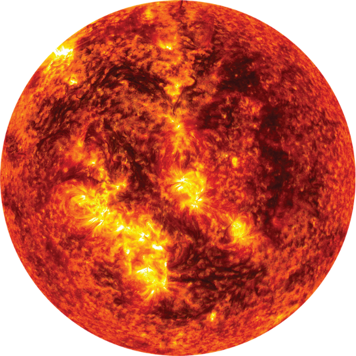
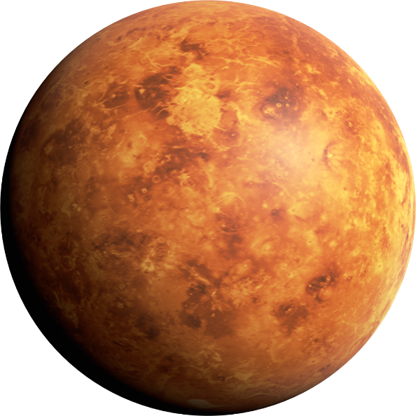
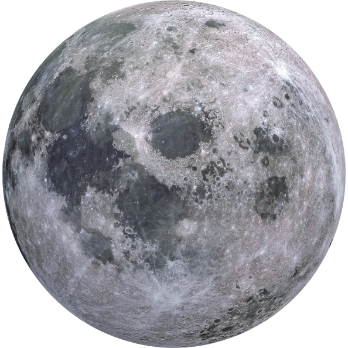
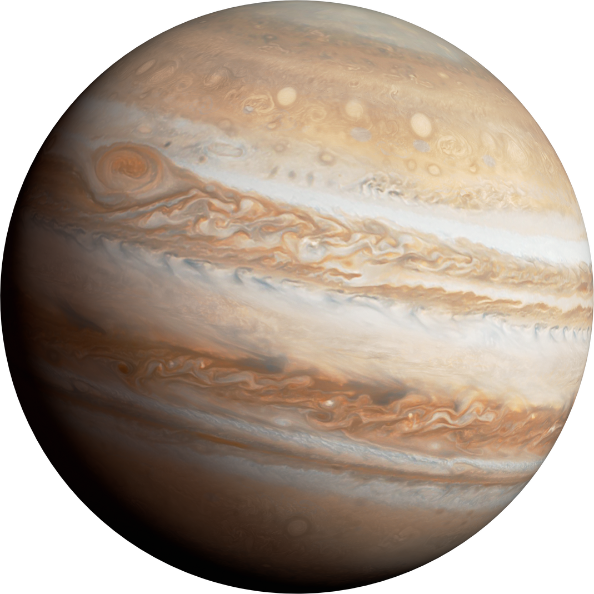
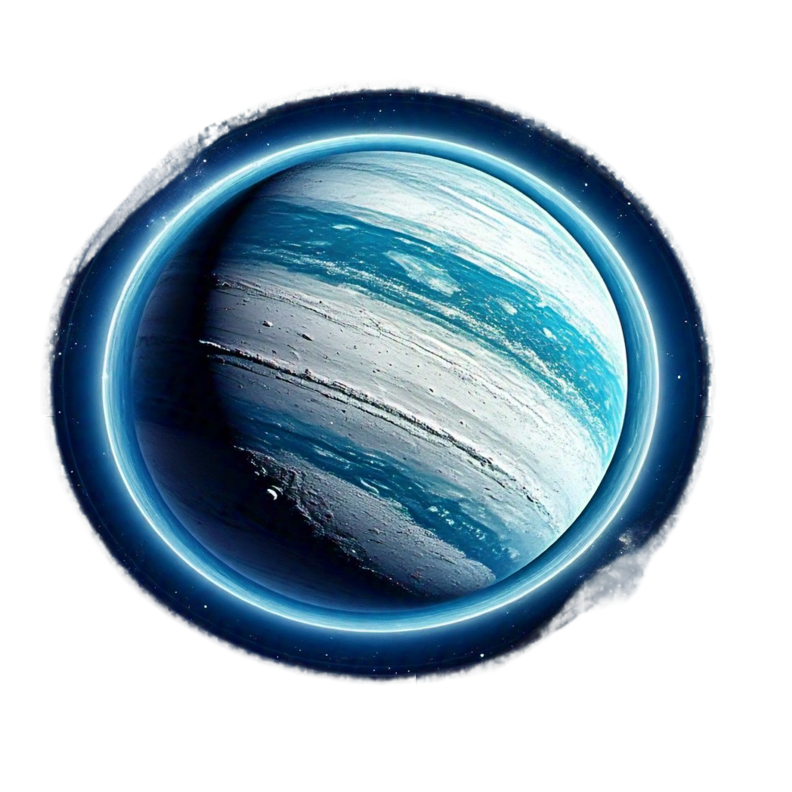
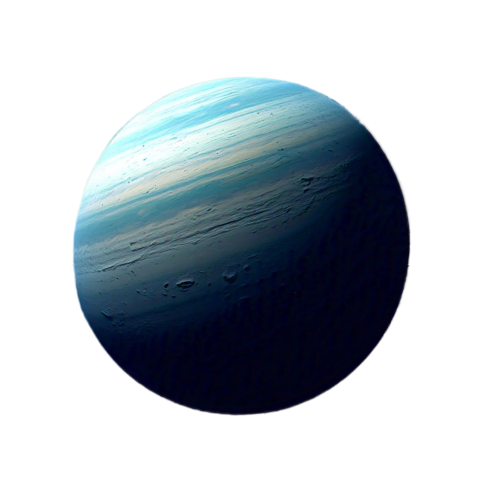

| Property | Value |
|---|---|
| Distance from Sun | 0 km (It is the Sun) |
| Surface Temperature | 5,500°C (core: 15M°C) |
| Rotation Period | 25–35 days |
| Diameter | 1,392,700 km |
| Planets Orbiting | 8 |
The Sun is a G-type main-sequence star burning for 4.6 billion years. It generates energy through nuclear fusion, fusing hydrogen into helium and releasing light and heat that power all life on Earth. It accounts for 99.86% of the Solar System's total mass.

| Property | Value |
|---|---|
| Distance from Sun | 57.9 million km |
| Surface Temperature | -180°C to 430°C |
| Orbital Period | 88 days |
| Diameter | 4,879 km |
| Number of Moons | 0 |
Mercury is a heavily cratered world resembling Earth's Moon. Despite being the closest planet to the Sun, it is not the hottest due to its lack of atmosphere to retain heat. A single day on Mercury lasts 59 Earth days.

| Property | Value |
|---|---|
| Distance from Sun | 108.2 million km |
| Surface Temperature | 465°C (avg) |
| Orbital Period | 225 days |
| Diameter | 12,104 km |
| Number of Moons | 0 |
Often called Earth's twin due to its similar size, Venus has a runaway greenhouse effect caused by its thick CO₂ atmosphere. Its dense clouds of sulfuric acid make it permanently overcast, and atmospheric pressure on its surface is 90 times that of Earth.

| Property | Value |
|---|---|
| Distance from Sun | 149.6 million km |
| Surface Temperature | -88°C to 58°C |
| Orbital Period | 365.25 days |
| Diameter | 12,742 km |
| Number of Moons | 1 |
Earth is the densest planet in the Solar System and the only one with active plate tectonics. Its large Moon stabilizes its axial tilt, contributing to the stable climate that allowed life to flourish over billions of years. Over 70% of its surface is covered by water.

| Property | Value |
|---|---|
| Distance from Sun | 149.6 million km |
| Surface Temperature | -173°C to 127°C |
| Orbital Period | 27.3 days (around Earth) |
| Diameter | 3,474 km |
| Number of Moons | 0 |
The Moon formed 4.5 billion years ago from debris after a Mars-sized body collided with early Earth. Its surface is covered in craters, vast plains called maria, and highlands. The Moon is gradually moving away from Earth at 3.8 cm per year and was last visited by humans in 1972.

| Property | Value |
|---|---|
| Distance from Sun | 227.9 million km |
| Surface Temperature | -125°C to 20°C |
| Orbital Period | 687 days |
| Diameter | 6,779 km |
| Number of Moons | 2 (Phobos, Deimos) |
Mars hosts the largest dust storms in the Solar System, capable of covering the entire planet for months. Its thin atmosphere is 95% CO₂. NASA's Perseverance rover is actively exploring Mars, drilling rock samples and searching for signs of ancient microbial life.

| Property | Value |
|---|---|
| Distance from Sun | 778.5 million km |
| Surface Temperature | -110°C (cloud tops) |
| Orbital Period | 11.9 years |
| Diameter | 139,820 km |
| Number of Moons | 95 |
Jupiter acts as a cosmic shield, its massive gravity pulling in asteroids that might otherwise hit inner planets. Its moon Europa holds a subsurface ocean beneath its icy crust and is one of the most promising places in the Solar System to search for extraterrestrial life.

| Property | Value |
|---|---|
| Distance from Sun | 1.43 billion km |
| Surface Temperature | -178°C (avg) |
| Orbital Period | 29.5 years |
| Diameter | 116,460 km |
| Number of Moons | 146 |
Saturn's rings consist of billions of ice and rock fragments ranging from tiny grains to chunks as large as houses. Despite its massive size, Saturn's rapid rotation (10.7 hours) causes it to bulge at the equator. Its moon Titan has a thick atmosphere and liquid methane lakes.

| Property | Value |
|---|---|
| Distance from Sun | 2.87 billion km |
| Surface Temperature | -224°C (avg) |
| Orbital Period | 84 years |
| Diameter | 50,724 km |
| Number of Moons | 28 |
Uranus is an ice giant composed of water, methane, and ammonia ices. It was the first planet discovered with a telescope, by William Herschel in 1781. Unlike other giant planets, Uranus emits almost no internal heat, making its atmosphere the coldest in the Solar System.

| Property | Value |
|---|---|
| Distance from Sun | 4.5 billion km |
| Surface Temperature | -214°C (avg) |
| Orbital Period | 164.8 years |
| Diameter | 49,244 km |
| Number of Moons | 16 |
Neptune was discovered in 1846 through mathematical prediction before direct observation. Its largest moon Triton is geologically active with nitrogen geysers and orbits opposite to Neptune's rotation. Voyager 2 remains the only spacecraft to have visited Neptune, in 1989.